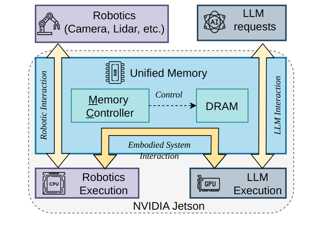
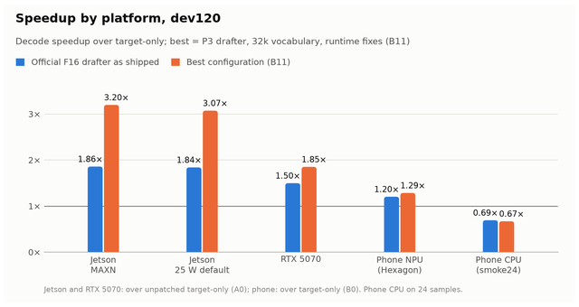

Teng Mei
Hi, I'm Teng Mei (梅腾), a master's student at the University of Tokyo, advised by Prof. Ken Takeuchi. I'm also a research assistant at the Semantic NetSys Lab, School of Data Science, The Chinese University of Hong Kong, Shenzhen, advised by Prof. Yunming Xiao.
Research Interests
- On-device LLM and VLM inference on unified-memory edge SoCs (NVIDIA Jetson, Snapdragon)
- Memory- and bandwidth-aware scheduling of LLMs alongside real-time workloads
- Speculative decoding and quantization for edge deployment
- Heterogeneous CPU / GPU / NPU execution, llama.cpp internals
News
Oct 2026
Released EdgeSpecQ and edge DSpark drafters for
LFM2.5-VL on Hugging Face.
Sep 2026
Presented MCSched at APSys '26 in Bangkok.
Apr 2026
Started my M.S. at the University of Tokyo.
Dec 2025
Joined CUHK-Shenzhen as a research assistant.
Publications

MCSched: Memory-Controller-Aware Scheduling for Embodied LLM Workloads on NVIDIA Jetson
Teng Mei, Chengxuan Pei, Marco Canini, Yunming Xiao
APSys '26ACM SIGOPS Asia-Pacific Workshop on Systems
Real-time robotics tasks and LLM inference share one memory controller on a Jetson; scheduling with
memory-pressure and deadline feedback cuts sensor deadline misses by up to 83% while keeping LLM speed.
YOLO-UOD: An Underwater Small Object Detector via Improved Efficient Layer Aggregation Network
Weiwen Chen, Tingting Zhuang, Yuan-fang Zhang, Teng Mei, Xiaoyu Tang
IET IPRIET Image Processing, 2024
Projects

EdgeSpecQ: speculative decoding for LFM2.5-VL on edge devices
3.2× faster decoding on an 8 GB Jetson Orin Nano with quantized, reduced-vocabulary DSpark drafters,
without retraining; measured on Jetson, a Snapdragon 8 Elite phone and an RTX 5070.
Education
Apr 2026 – now
M.S., Electrical Engineering and Information Systems, The University of Tokyo
2020 – 2024
B.Eng., Electronic Information Engineering, South China Normal University
Experience
Dec 2025 – now
Research Assistant, The Chinese University of Hong Kong, Shenzhen (advisor: Prof. Yunming Xiao)